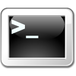

Debugging/es
Primero testee
Antes de pasar por el engorroso proceso de depuración, utilice el marco de pruebas para comprobar si las pruebas estándar funcionan correctamente. Si no se ejecutan por completo, es posible que haya un problema con la instalación.
Línea de comandos
La depuración de FreeCAD se realiza mediante algunos mecanismos internos. La versión de línea de comandos de FreeCAD ofrece varias opciones para facilitar la depuración.
Estas son las opciones reconocidas actualmente en FreeCAD 0.19:
Opciones genéricas:
-v [ --version ] Imprime la cadena de la versión -h [ --help ] Imprime el mensaje de ayuda -c [ --console ] Comienza en modo consola --response-file arg También se puede especificar con '@nombre' --dump-config Configuración de volcados --get-config arg Imprime el valor de la clave de configuración solicitada
Configuración:
-l [ --write-log ] Escribe un archivo de registro en:
$HOME/.local/share/FreeCAD/FreeCAD.log (Linux)
$HOME/Library/Application\ Support/FreeCAD/FreeCAD.log (macOS)
%APPDATA%\FreeCAD\FreeCAD.log
--log-file arg A diferencia de --write-log, esto permite iniciar sesión en un
archivo arbitrario
-u [ --user-cfg ] arg Archivo de configuración de usuario para cargar/guardar configuraciones de usuario
-s [ --system-cfg ] arg Archivo de configuración del sistema para cargar/guardar la configuración del sistema
-t [ --run-test ] arg Caso de prueba - o 0 para todos
-M [ --module-path ] arg Rutas de módulos adicionales
-P [ --python-path ] arg Rutas adicionales de Python
--single-instance Permite ejecutar una única instancia de la aplicación
Generando un rastreo de pila
Si utiliza una versión de FreeCAD muy reciente, es posible que se produzca un fallo. Puede ayudar a solucionar estos problemas proporcionando a los desarrolladores un registro de errores. Para ello, necesita ejecutar una versión de depuración del software. La opción "versión de depuración" es un parámetro que se configura durante la compilación, por lo que tendrá que compilar FreeCAD por su cuenta u obtener una versión de depuración precompilada.
Para Linux
Depuración de Linux →
Requisitos previos:
- paquete de software gdb instalado
- una versión de depuración de FreeCAD (en este momento solo está disponible mediante la compilación desde el código fuente)
- un modelo de FreeCAD que provoca un problema
Pasos: Ingrese lo siguiente en la ventana de su terminal:
Encuentre el binario FreeCAD en su sistema:
$ whereis freecad
freecad: /usr/local/freecad <--- for example
$ cd /usr/local/freecad/bin
$ gdb FreeCAD
GNUdebugger generará información de inicialización. El (gdb) muestra que GNUDebugger se está ejecutando en la terminal, ahora ingrese:
(gdb) handle SIG33 noprint nostop
(gdb) run
FreeCAD ahora se iniciará. Realice los pasos que hacen que FreeCAD se bloquee o se congele, luego ingrese en la ventana de terminal:
(gdb) bt
Esto generará una lista larga de exactamente lo que estaba haciendo el programa cuando falló o se congeló. Incluya esto con su informe de problemas.
(gdb) bt full
Imprima también los valores de las variables locales. Esto se puede combinar con un número para limitar la cantidad de fotogramas mostrados.
Para macOS
Depuración de macOS →
Requisitos previos:
- Paquete de software lldb instalado
- Versión de depuración de FreeCAD
- Modelo de FreeCAD que provoca un fallo
Pasos: Introduzca lo siguiente en la ventana de su terminal:
$ cd FreeCAD/bin
$ lldb FreeCAD
LLDB mostrará información de inicialización. (lldb) muestra que el depurador se está ejecutando en la terminal, ahora ingrese:
(lldb) run
FreeCAD se iniciará ahora. Realice los pasos que provocan que FreeCAD se bloquee o se congele, y luego ingrese en la ventana del terminal:
(lldb) bt
Esto generará una lista detallada de lo que estaba haciendo el programa cuando falló o se bloqueó. Incluya esta información en su informe de problemas.
Listado de bibliotecas cargadas por FreeCAD
(Aplicable a Linux y macOS)
A veces resulta útil saber qué bibliotecas carga FreeCAD, especialmente si se cargan varias bibliotecas con el mismo nombre pero de versiones diferentes (colisión de versiones). Para ver qué bibliotecas carga FreeCAD cuando falla, abra una terminal y ejecute el depurador. En una segunda ventana de terminal, averigüe el ID del proceso de FreeCAD:
ps -A | grepFreeCAD
Utilice el ID devuelto y páselo a lsof:
lsof -p process_id
Esto imprime una larga lista de recursos cargados. Por ejemplo, si intenta determinar si se ha cargado más de una versión de la biblioteca Coin3d, desplácese por la lista o busque directamente "Coin" en la salida:
lsof -p process_id | grep Coin
Depuración de Python
Para un enfoque más moderno para depurar Python, consulte estas publicaciones:
- Depuración de macros con VS 2017
- Depuración de entornos de trabajo de Python
- No se encontraron python3.dll, Qt5Windgets.dll, Qt5Gui.dll ni Qt5Core.dll
winpdb
Depuración de winpdb →
Aquí tiene un ejemplo de cómo usar Winpdb dentro de FreeCAD:
Necesitamos el depurador de Python: Winpdb. Si no lo tiene instalado, en Ubuntu/Debian instálelo con:
sudo apt-get install winpdb
Ahora vamos a configurar el depurador.
- Iniciar Winpdb.
- Establecer la contraseña del depurador como "test": Ir al menú Archivo → Contraseña y establecer la contraseña.
Ahora ejecutaremos un script de prueba de Python en FreeCAD paso a paso.
- Ejecute winpdb y establezca la contraseña (por ejemplo, test)
- Cree un archivo Python con este contenido
import rpdb2
rpdb2.start_embedded_debugger("test")
import FreeCAD
import Part
import Draft
print "hello"
print "hello"
import Draft
points=[FreeCAD.Vector(-3.0,-1.0,0.0),FreeCAD.Vector(-2.0,0.0,0.0)]
Draft.makeWire(points,closed=False,face=False,support=None)
- Inicie FreeCAD y cargue el archivo anterior.
- Presione F6 para ejecutarlo.
- Ahora FreeCAD dejará de responder porque el depurador de Python está esperando.
- Cambie a la interfaz gráfica de Winpdb y haga clic en "Adjuntar". Después de unos segundos, aparecerá un elemento "<Entrada>" donde debe hacer doble clic.
- Ahora el script que se está ejecutando aparece en Winpdb.
- Establezca un punto de interrupción en la última línea y presione F5.
- Ahora presione F7 para entrar en el código Python de Draft.makeWire.
Visual Studio Code (VS Code)
Depuración en VS Code →
Requisitos previos:
- El paquete ptvsd debe instalarse en Python 3 fuera de FreeCAD, luego el módulo debe copiarse a la carpeta de la biblioteca de Python de FreeCAD.
# In a cmd window that has a path to you local Python 3:
pip install ptvsd
# Then if your Python is installed in C:\Users\<userid>\AppData\Local\Programs\Python\Python37
# and your FreeCAD is installed in C:\freecad\bin
xcopy "C:\Users\<userid>\AppData\Local\Programs\Python\Python37\Lib\site-packages\ptvsd" "C:\freecad\bin\Lib\site-packages\ptvsd"
Documentación de Visual Studio Code para la depuración remota
Pasos: * Agregue el siguiente código al principio de tu script.
import ptvsd
print("Waiting for debugger attach")
# 5678 is the default attach port in the VS Code debug configurations
ptvsd.enable_attach(address=('localhost', 5678), redirect_output=True)
ptvsd.wait_for_attach()
- Agregue una configuración de depuración en Visual Studio Code Debug → Add Configurations….
- La configuración debería verse de la siguiente manera:
"configurations": [
{
"name": "Python: Attacher",
"type": "python",
"request": "attach",
"port": 5678,
"host": "localhost",
"pathMappings": [
{
"localRoot": "${workspaceFolder}",
"remoteRoot": "."
}
]
},
- En VS Code, añada un punto de interrupción donde quiera.
- Ejecute el script en FreeCAD. FreeCAD se congelará esperando la conexión.
- En VS Code, inicie la depuración con la configuración creada. Debería ver las variables en el área del depurador.
- Al establecer puntos de interrupción, VS Code mostrará un error indicando que no encuentra el archivo .py abierto en el editor de VS Code.
- Cambie "remoteRoot": "." a "remoteRoot": "<directorio del archivo>"
- Por ejemplo, si el archivo Python se encuentra en /home/FC_myscripts/myscript.py
- Cambiar a: "remoteRoot": "/home/FC_myscripts"
- Si solo está depurando macros de FreeCAD desde la carpeta de macros de FreeCAD, y esa carpeta es "C:/Users/<userid>/AppData/Roaming/FreeCAD/Macro", entonces use:
- "localRoot": "C:/Users/<userid>/AppData/Roaming/FreeCAD/Macro",
- "remoteRoot": "C:/Users/<userid>/AppData/Roaming/FreeCAD/Macro"
- Cambie "remoteRoot": "." a "remoteRoot": "<directorio del archivo>"
- Si su macro no encuentra ptvsd a pesar de haberlo instalado en algún lugar, anteponga 'import ptvsd' con
from sys import path
sys.path.append('/path/to/site-packages')
La ruta apunta al directorio donde se instaló ptvsd.
- En la esquina inferior izquierda de VS Code, puede seleccionar el ejecutable de Python; lo ideal es usar la versión incluida con FreeCAD.
En la versión para Mac, la ruta es /Applications/FreeCAD.App/Contents/Resources/bin/python.
Puede localizarlo en su sistema escribiendo
import sys
print(sys.executable)
en la consola de Python de FreeCAD.
Con LiClipse y AppImage
Depuración de LiClipse →
- Extraer AppImage.
> ./your location/FreeCAD_xxx.AppImage --appimage-extract
> cd squashfs-root/
- La ubicación sqashfs-root es donde se conecta posteriormente el depurador.
- Asegúrese de poder iniciar una sesión de FreeCAD desde la ubicación raíz de squashfs.
squashfs-root> ./usr/bin/freecadcmd
- Debe iniciar una sesión de línea de comandos de FreeCAD.
- Instale LiClipse.
- Viene con PyDev preinstalado y cuenta con instaladores para todas las plataformas.
- Para Linux, solo tiene que extraerlo (en cualquier ubicación) y ejecutarlo.
- Configure liclipse para la depuración.
- Haga clic derecho en el icono de pydev (esquina superior derecha) y seleccione "Personalizar".
- Active "PyDev Debug" (mediante la casilla de verificación; también puede ser necesario ir a la pestaña "Disponibilidad del conjunto de acciones" y activarlo allí primero).
- En el menú de pydev, ahora puede seleccionar "Iniciar servidor de depuración".
- Use el menú Ventana/Abrir perspectiva/Otros > Depurar.
- Haga clic derecho en el icono de depuración (esquina superior derecha) y seleccione "Personalizar".
- Al marcar "Depurar", las herramientas de navegación de depuración se añaden a la barra de herramientas.
- Abra las preferencias a través del menú Ventana/Preferencias.
- En PyDev/Interpreters, añada "Nuevo intérprete mediante la búsqueda".
- El intérprete añadido debe ser:
tu_ruta_local/squashfs-root/usr/bin/python. - Si solo lo usa para FreeCAD, también puede agregar carpetas de entorno de trabajo AddOn, o hacerlo más adelante en un proyecto pydev.
- El intérprete añadido debe ser:
- Encuentre la ruta a
pydevd.pyen su instalación de liclipse.
- Algo parecido a:
tu_ubicación/liclipse/plugins/org.python.pydev.xx/pysrc.
- Algo parecido a:
- Cree un proyecto pydev normal en liclipse.
- Importe fuentes externas, por ejemplo, una macro que quiera depurar o un entorno de desarrollo externo.
- En esa macro (o archivo .py del entorno de desarrollo) añada las siguientes líneas de código:
import sys; sys.path.append("path ending with /pysrc") import pydevd; pydevd.settrace()
- Aquí es donde se detendrá la ejecución cuando se ejecute la macro.
- Inicie el servidor de depuración de Liclipse (menú pydev).
- Inicie FreeCAD.
squashfs-root> ./usr/bin/freecad
- Ejecute la macro (o cualquier otro archivo con un disparador
pydevd.settrace()) desde FreeCAD, como lo haría normalmente.
- ¡Feliz depuración!
- El uso de LiClipse para la depuración remota, y los pasos aquí descritos relacionados con LiClipse, deberían funcionar en cualquier plataforma. Las partes relacionadas con AppImage son solo para Linux.
Pyzo
Consulte el artículo principal sobre Pyzo.
Depuración de OpenCasCade
Para los desarrolladores que necesiten profundizar en el núcleo de OpenCasCade, el usuario @abdullah ha creado una thread orientación que explica cómo hacerlo.
{kind=link}

Power user documentation- FreeCAD scripting: Python, Introduction to Python, Python scripting tutorial, FreeCAD Scripting Basics
- Modules: Builtin modules, Units, Quantity
- Workbenches: Workbench creation, Gui Commands, Commands, Installing more workbenches
- Meshes and Parts: Mesh Scripting, Topological data scripting, Mesh to Part, PythonOCC
- Parametric objects: Scripted objects, Viewproviders (Custom icon in tree view)
- Scenegraph: Coin (Inventor) scenegraph, Pivy
- Graphical interface: Interface creation, Interface creation completely in Python (1, 2, 3, 4, 5), PySide, PySide examples beginner, intermediate, advanced
- Macros: Macros, How to install macros
- Embedding: Embedding FreeCAD, Embedding FreeCADGui
- Other: Expressions, Code snippets, Line drawing function, FreeCAD vector math library (deprecated)
- Hubs: User hub, Power users hub, Developer hub